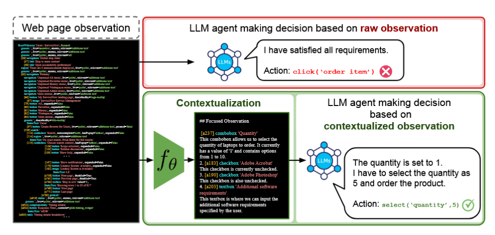
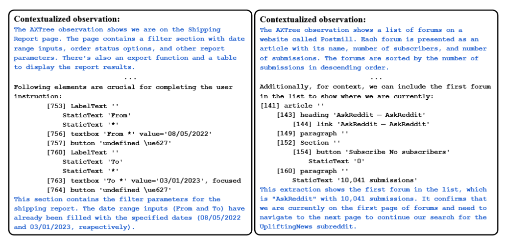

Literature Review: Learning to Contextualize Web Pages for Enhanced Decision Making by LLM Agents
Summary
- Problem: Large Language Model (LLM) agents struggle with real-world web automation tasks due to the complexity and length of raw web page observations (i.e. HTML, accessibility trees), which hinders effective decision making.
- Proposed Solution: The authors introduce LCoW (Learning to Contextualize Web pages), a framework that decouples web page understanding from decision making. LCoW trains a dedicated contextualization module to transform complex web observations into concise, task-relevant, and comprehensible representations for LLM agents.
- Training Algorithm: LCoW employs an iterative process:
- Collect successful agent trajectories on web tasks.
- For each observation, sample multiple candidate contextualizations.
- Score each candidate by how well various LLM agents can predict the next correct action from it.
- Fine-tune the contextualization module to maximize the likelihood of producing the best-scoring contextualizations.
- Benchmarks & Results:
- Evaluated on WebShop, WorkArena, and WebArena benchmarks.
- LCoW yields substantial success rate improvements (i.e. +15.6% for closed-source LLMs, +23.7% for open-source LLMs on WorkArena).
- Achieves state-of-the-art performance on WebShop, outperforming human experts.
- Generalizes to unseen LLMs and tasks, and improves performance even for smaller models.
- Qualitative Analysis: The contextualization module not only extracts relevant UI elements but also provides verbal explanations, reducing redundant or inadmissible actions and improving efficiency.
- Limitations: Generalization is limited when encountering entirely new UI elements or task categories not seen during training. The approach incurs additional latency due to the contextualization step.
Figures

Figure 1: LCoW decouples web understanding from decision making. The contextualization module transforms complex web observations into concise, task-relevant context for the LLM agent.

_Figure 2: Examples of how the contextualization module refines complicated web pages into com- prehensible format from WebArena benchmark (Left) and WorkArena benchmark (Right). _
Key Insights
- Decoupling Perception and Decision: Separating the web page understanding (contextualization) from the action selection (decision making) allows LLM agents to focus on high-level reasoning, leveraging their strengths.
- Data-Efficient Training: LCoW can leverage a relatively small number of successful demonstrations to train the contextualization module, which then generalizes to new agents and tasks.
- Robustness and Generalization: The contextualization module, trained to maximize action predictability across multiple LLMs, avoids overfitting and enhances adaptability to different agent architectures and unseen tasks.
- Improved Efficiency: Agents using LCoW complete tasks with fewer redundant actions and higher success rates, especially on complex or cluttered web pages.
- Limitations: Generalization to tasks with entirely new UI elements or categories not seen during training remains challenging, and the added inference step introduces some latency.
Example
Task: “Purchase me an iPad pro with silver color and 128GB storage.”
- Raw Observation: Lengthy, unstructured accessibility tree with many irrelevant elements.
- Contextualized Observation (LCoW output):
- Highlights only the relevant UI elements: color options (“Silver” selected), storage options (“128GB” selected), quantity, and the “Order Now” button.
- Provides reasoning: “We have navigated to the Hardware store and clicked on the iPad pro link. The actions needed to accomplish the user instruction are to choose color option and disk option.”
- Guides the agent to efficiently select the required options and complete the order.
Ratings
| Category | Score | Comments |
|---|---|---|
| Novelty | 3 | Decoupling contextualization from decision making is a notable and non-trivial contribution, but is akin to a preprocessing step. |
| Technical Contribution | 3.5 | Introduces a new training algorithm for contextualization modules and demonstrates SoTA results. |
| Readability | 4 | Clear explanations, many qualitative examples, and well-structured figures and tables. |
Enjoy Reading This Article?
Here are some more articles you might like to read next: